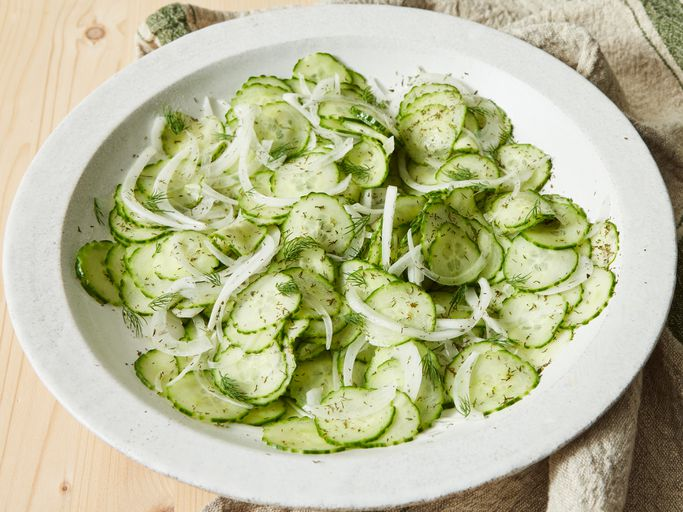

Home
Cucumber Salad

This cucumber salad is refreshing and delicious! A sweet and sour
dressing is poured over thinly sliced cucumbers to ensure the best
flavor. The salad can be served chilled or at room temperature.
Ingredients
- Cucumbers
- Onion
- Vinegar
- Sugar
- Water
- Dill
Steps
- Toss the cucumber and onion slices together.
- Boil the vinegar, water, and sugar.
-
Pour the vinegar mixture over the cucumbers and onions.
-
Stir in the dill and let marinate before serving.